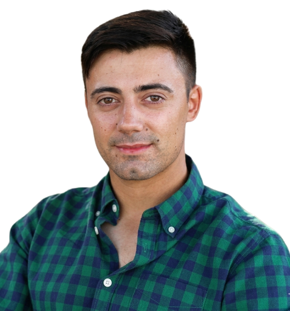
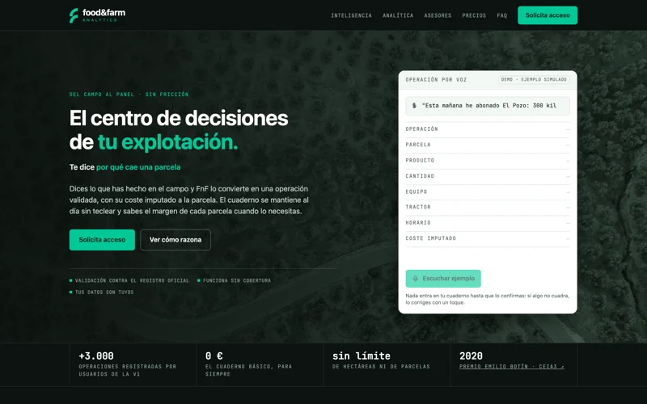
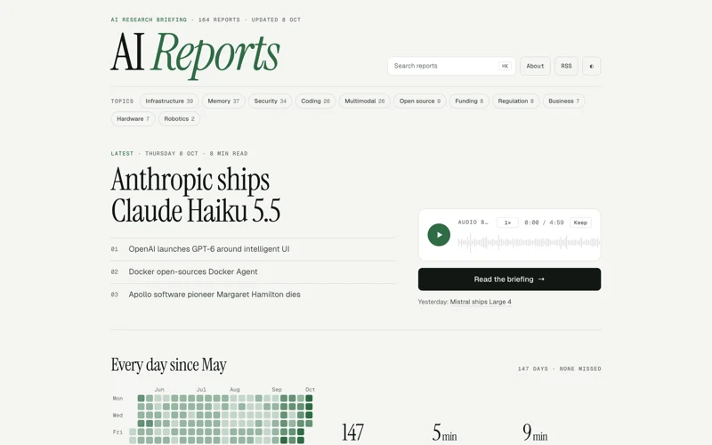
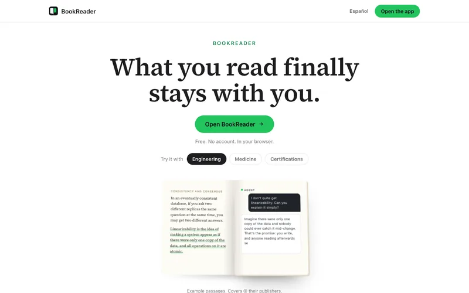
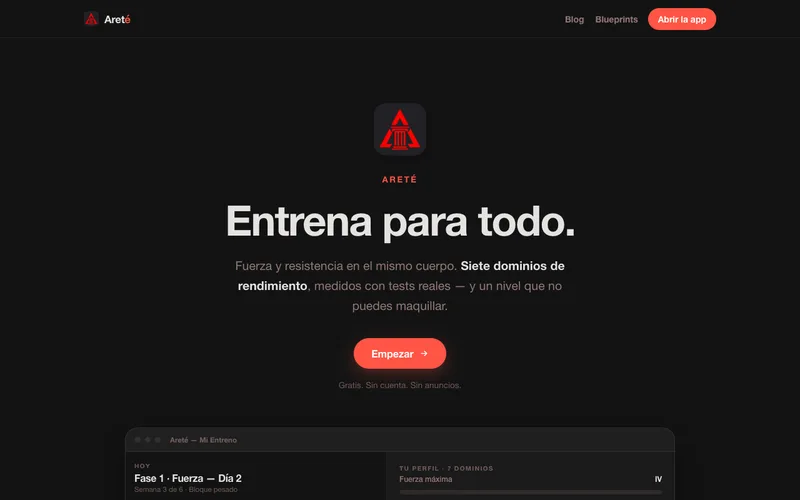

SRE · AI Engineer · profesorSistemas que no se caen. IA que resuelve.
Mantengo sistemas en producción, construyo productos con IA y enseño Python y DevOps. Badajoz, para cualquier sitio.
Productos con IA, en producción
Los construyo de principio a fin: el producto, la infraestructura y la parte de IA.

Food & Farm Analytics
El agricultor dicta lo que ha hecho y la IA lo convierte en una operación validada contra el registro oficial, con su coste por parcela.

AI Reports
Un pipeline que investiga, redacta y verifica sus fuentes. Publica un informe cada día desde mayo. Los textos los escribe la IA.

Bookreader
Un lector con IA que te explica lo que lees y te ayuda a recordarlo. Sin cuenta, en el navegador.

Areté
Entrenamiento de fuerza y resistencia: siete dominios medidos con tests reales y un plan que se adapta.
Producción estable en el sector farmacéutico
Desde 2022 lidero un equipo de SRE. Me ocupo de que los sistemas aguanten, de enterarnos antes que el usuario y de automatizar lo que se repite.
- Observabilidad e incidentes con Splunk ITSI y PagerDuty
- Automatización con Rundeck, Ansible y Python
- CI/CD y Kubernetes, con objetivos de disponibilidad medidos
- IA aplicada a operaciones: clasificar, priorizar y diagnosticar
Plataforma de automatización
Unas 3.000 tareas al día, desplegada en Kubernetes con Ansible y Jenkins. Plugins propios para Splunk, ServiceNow y Vault.
Autodispatcher
Una red neuronal clasifica los incidentes de ServiceNow y los asigna al técnico adecuado. Asignar un ticket pasó a llevar un 90 % menos de tiempo.
Cambios en masa sin errores
Automatizaciones para que los equipos actualicen cientos de cuentas de AWS de una vez, con guías y sesiones de demostración.
Enseño lo que uso cada día
Python desde 2023 y DevOps desde 2024. Clases sueltas, cursos completos y formación para equipos. Cada curso tiene su repositorio abierto.
¿Tienes un sistema, un equipo o una idea?
Cuéntame en dos líneas qué necesitas. Te contesto en menos de 48 horas.